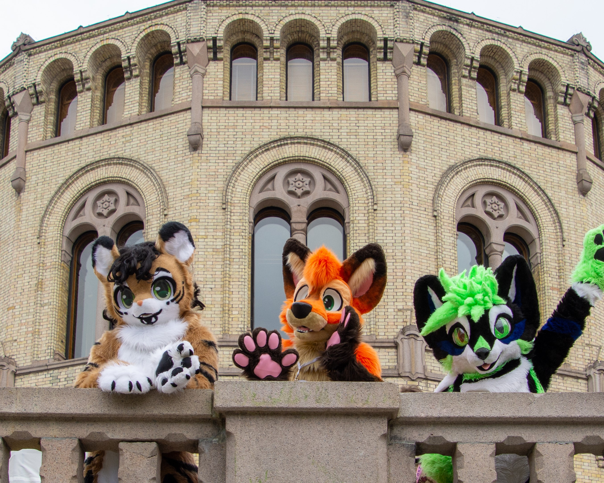

Furry-fellesskapet er en underkultur som er preget av en lidenskap for antropomorfe dyrefigurer, hvor deltakerne ofte skaper og identifiserer seg med såkalte "fursonas" – fantasifulle dyrepersonligheter som representerer deres egne karaktertrekk og interesser. Disse karakterene kan være alt fra klassiske dyr som ulver og rever til mer fantasifulle skapninger som drager og enhjørninger. Furry-fellesskapet inkluderer en rekke aktiviteter og interesser, inkludert kunst, litteratur, kostymedesign og sosiale samlinger som konvensjoner og nettforum. For mange deltakere er furry ikke bare en hobby, men en viktig del av deres identitet og sosiale liv. Til tross for noen misforståelser og stereotyper knyttet til furry-fellesskapet, er det et mangfoldig og inkluderende miljø som verdsetter kreativitet, selvuttrykk og fellesskap.
De fleste forbinder gjerne kunst med de tradisjonelle kunstformene som
tegning, maleri og skulptur. Disse har eksistert siden antikken, men
det har også kunnet spores tilbake til forhistorisk tid.
De siste 250 årene har kunst derimot raskt endret materiell form,
tematisk innhold og sosial virkemåte. Filosofer og kunsthistorikere
har prøvd å fange opp disse forandringene i en felles definisjon.
Likevel har flere forsøk på å definere kunst ikke samsvart med det som
allmenn er ansett som kunst.
- Store norske leksikon, 26.03.2024
Om man likevel vil definere kunst, så sier derimot lovdata om følgende:
"(1) Med kunstverk menes originale
Furry-fellesskapet og kunst er dypt sammenvevd, med folk som utforsker sin lidenskap for antropomorfiske dyr gjennom et bredt spekter av kreative uttrykksformer. Maling og tegning er blant de mest populære kunstformene innenfor furry-kulturen, og de brukes ofte til å skape levende og fantasifulle bilder av fursonas og andre dyrefigurer. Kunstnerne i dette fellesskapet utforsker forskjellige stiler, fra realistiske portretter til mer stiliserte og abstrakte verk, og hver kunstner legger sin unike vri på sine kreasjoner. I tillegg til tradisjonelle maleri- og tegneteknikker, spiller digitale medier en stadig mer dominerende rolle i furry-kunstverdenen. Digitale illustrasjoner og manipulasjoner tillater større fleksibilitet og muligheten til å skape intrikate og detaljerte bilder som utforsker grensene mellom fantasi og virkelighet. Bilder spiller også en viktig rolle innenfor furry-fellesskapet, og det er vanlig for medlemmer å dele sine kunstverk gjennom sosiale medier, nettsider og online gallerier. Disse bildene gir ikke bare en visuell fest for øynene, men fungerer også som et middel for å dele og feire fellesskapets kreative talenter og mangfold.
Fursuits, eller pelsdrakter, representerer en unik form for furry-kunst hvor man skaper egne kostymer av sine fursonas eller andre dyrefigurer. Disse kostymene, som ofte inkluderer hode, hale, og pelsdrakter, tillater brukere å spille sine karakterer på offentlige arrangementer som conventions eller parader. Hvert fursuit er et unik håndlaget mesterverk, skapt med omhu og dedikasjon for å gjenskape karakterens utseende og personlighet på en levende måte. Samlet sett gir maling, tegning, bilder og fursuits furry-fellesskapet en rik og variert visuell kultur som feirer fantasien og kreativiteten til sine medlemmer på en unik og fargerik måte.